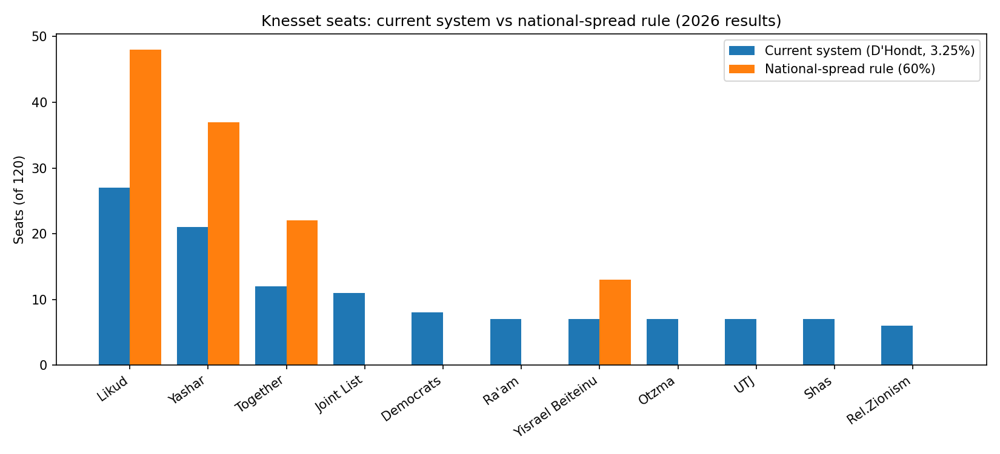

המטרה
להקטין את כוחן של מפלגות מגזריות ולעודד התלכדות סביב מפלגות שמתמודדות בכל רחבי הארץ. ההצעה אינה מציגה את עצמה כשיטה ניטרלית: היא בוחרת במפורש ביציבות ובכלל-ארציות על חשבון ייצוג של מפלגות סקטורליות ו/או שהבוחרים שלהן מרוכזים גאוגרפית.
מטרה נוספת: להקטין את ההשפעה של קניית קולות. קולות שנקנו בריכוז ביישובים ספורים אינם מאפשרים למפלגה לעמוד בתנאי הפיזור, ולכן אינם יכולים להכניס אותה לכנסת.
ההצעה
- רשימה קבועה של "שורות", שמוגדרת פעם אחת ואז מוקפאת:
- כל יישוב מעל 10,000 תושבים הוא שורה בפני עצמו.
- כל מועצה אזורית (כולל מועצות ישראליות ביהודה ושומרון) היא שורה אחת, ובה כל יישוביה.
- כל המעטפות הכפולות מיוצגות בשורה אחת.
- יישובים קטנים שאינם במועצה אזורית לא נמצאים ברשימה, אבל הקולות שלהם נספרים בחלוקת המושבים.
- תנאי כניסה: מפלגה נכנסת לכנסת רק אם היא עוברת 3.25% מהקולות ב-60% לפחות מהשורות.
- חלוקת המושבים: ללא שינוי. ההצעה נוגעת רק בתנאי הכניסה ובבניית השורות. המושבים מחולקים בשיטה הקיימת (באדר-עופר) בין המפלגות שעברו את התנאי, לפי כל הקולות בארץ.
כללי הקפאת הרשימה
כדי למנוע מניפולציות פוליטיות, הרשימה מוקפאת לאחר שהוגדרה, ומותרים בה רק שני שינויים. הכללים חלים על כל השורות, יישובים ומועצות אזוריות כאחד.
- פיצול: שורה שמתפצלת לשניים או יותר, רק החלק הגדול מביניהם נשאר שורה ברשימה. הגודל נקבע לפי מספר התושבים ביום הפיצול. החלקים האחרים יוצאים מהרשימה, וקולותיהם ממשיכים להיספר בחלוקת המושבים.
- איחוד: שורות שמתאחדות הופכות לשורה אחת. אם שורה שברשימה מתאחדת עם יישוב שאינו ברשימה, השורה המאוחדת כוללת את כל הקולות של הישות החדשה.
כל שינוי אחר אסור: אין הוספת שורות ואין הסרת שורות.
מה היה קורה בבחירות 2026
| מפלגה | % קולות | עוברת ב-% מהשורות | מושבים בשיטה | מושבים היום* |
|---|---|---|---|---|
| ליכוד | 20.5 | 74.7 | 48 | 27 |
| ישר! | 16.1 | 72.2 | 37 | 21 |
| יחד | 9.4 | 64.6 | 22 | 12 |
| ישראל ביתנו | 5.9 | 60.1 | 13 | 7 |
| עוצמה יהודית | 5.7 | 55.6 | 0 | 7 |
| הדמוקרטים | 6.4 | 49.0 | 0 | 8 |
| ציונות דתית | 5.1 | 45.5 | 0 | 6 |
| המשותפת | 8.8 | 32.8 | 0 | 11 |
| ש"ס | 5.3 | 31.8 | 0 | 7 |
| רע"ם | 5.9 | 30.8 | 0 | 7 |
| יהדות התורה | 5.5 | 15.2 | 0 | 7 |
* קירוב: אחוז חסימה 3.25%, בלי הסכמי עודפים. בלי הסכמי עודפים באדר-עופר נותנת בבחירות האלה את אותה תוצאה כמו דהונדט (נבדק), ולכן החישוב משתמש בדהונדט. הסכמי עודפים עשויים להזיז מושב או שניים. 198 שורות, 119 נדרשות. 48.2% מהקולות הולכים למפלגות בלי מושבים (חישוב סטטי, בלי שינוי בהצבעה).

מחירים ומגבלות
- הקפאה: הרשימה חסינה מתמרוני גבולות, ושינוי בה אפשרי רק בפיצול או באיחוד לפי הכללים לעיל. מנגד, היא קפואה מול שינויים דמוגרפיים: יישוב שגדל מעבר ל-10,000 תושבים אחרי ההקפאה לא נכנס לרשימה, ויישוב שהצטמצם נשאר בה.
שחזור
הקוד והנתונים פתוחים. הרצה מתוך תיקיית simulation: python final_simulation.py
- final_simulation.py · הסימולציה
- expc_1.csv · תוצאות הבחירות ברמת יישוב, ועדת הבחירות המרכזית
- downloadFile.xlsx · נתוני יישובים, הלמ"ס
- כל הקבצים ב-GitHub